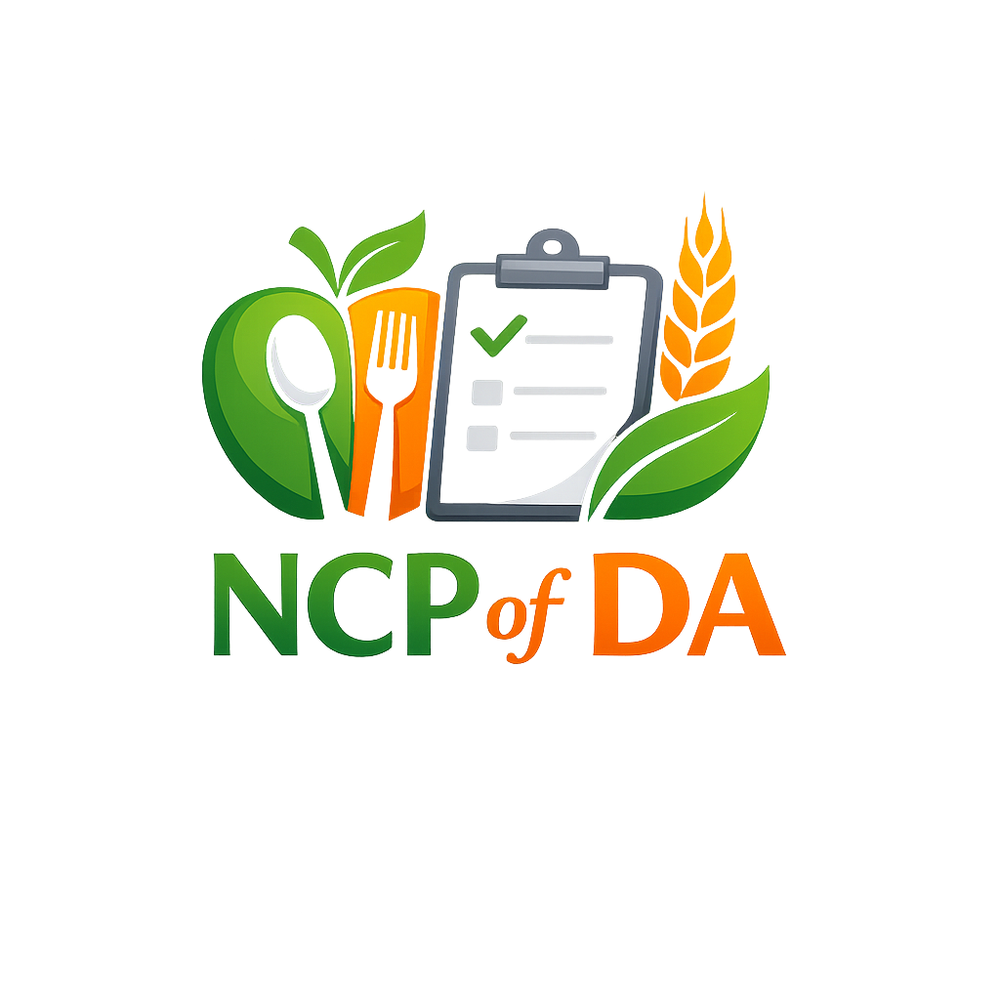

NCP of DA
Platform digital yang dirancang untuk mempermudah implementasi Nutrition Care Process (NCP) sesuai standar IDNT/NCP internasional. Mendukung dietisien dan mahasiswa gizi dalam melakukan asesmen, diagnosa PES otomatis, intervensi, serta monitoring-evaluasi secara terstruktur dan profesional.

Dian Agnesia, S.Gz., M.PH
